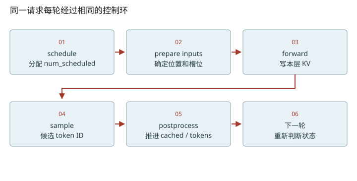
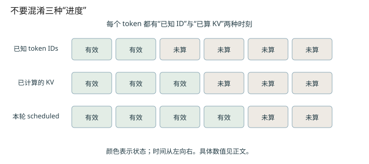

深入篇 24 / nano-vllm 源码追踪 · 2026-11-08
跟踪一个请求：token 数、已缓存数与下一次计算
用状态表走完 chunked prefill 和两次 decode，定位每一次计数器更新。
用状态表走完 chunked prefill 和两次 decode，定位每一次计数器更新。

固定一个足够小的例子
假设 prompt 长度7、prefill 每轮预算4、KV容量足够、没有prefix命中，生成至少3个token且不遇到EOS。下表中的状态都是 postprocess 完成之后；N=num_tokens，C=num_cached_tokens，S=num_scheduled_tokens。P代表prompt，g代表输出。
| 轮次 | 送入模型 | N | C | S | 追加输出？ |
|---|---|---|---|---|---|
| 入队 | 无 | 7 | 0 | 0 | 否 |
| prefill 1 | P0…P3 | 7 | 4 | 0 | 否 |
| prefill 2 | P4…P6 | 8 | 7 | 0 | g0 |
| decode 1 | g0（位置7） | 9 | 8 | 0 | g1 |
| decode 2 | g1（位置8） | 10 | 9 | 0 | g2 |
源码顺序决定这张表
schedule 选中等待队列头部，令 S=min(剩余prompt,剩余预算)；完成prefill所需token全部被调度时将它从waiting移到running。这是调度决定，不等于GPU已经完成。model_runner 以start=C、end=C+S打包输入。postprocess首先hash刚完成的整块，再C+=S、S=0；若是prefill且C<N，continue，不追加候选。否则append_token，让N再加1。
因此“已经在running队列”与“已经拿到首token”不是同一个瞬间；看状态前要注明是在schedule之后还是postprocess之后。同步nano实现很快走完这段，vLLM异步流水线会把这类区分放大。
抢占不是把 token IDs 删掉
preempt把状态改回WAITING、is_prefill=True，释放块表并将C清零；已知token_ids仍保留，包括生成历史。重入时相当于用更长的已知前缀重算KV，可能再次利用仍可命中的完整prefix块。它不是从用户原始prompt重新采样一条不同的生成历史。
这个最小调度器的限制
此版本只要本轮排出了prefill就立即返回，所以同轮不混decode。分块prefill只允许当前scheduled列表的第一条序列使用剩余预算；之后遇到装不下的序列会break。can_allocate先为请求当前全部token预留所需块，chunked计算预算并没有自动改成按chunk分配显存。读小框架时应把这些简化和生产引擎区别开。

数值练习：先算，再核对
把prompt长度改成9，预算仍4。写出每轮N/C，直到第一个输出产生。然后用下面源码摘录逐行验证。若你有自己的日志，只记录seq_id/N/C/S/队列即可，先不要记录模型张量。
闭卷检索
不要回看正文。答错后先解释原因，再重新打开这一课。
把结论落到源码
- 对照 schedule L48–55 与 postprocess，标注入running与追加首token的两个时间点。
- 沿 preempt → deallocate → allocate 追踪 block_table、C与token_ids，解释重算输入。
以下行号由本地 vendor 文件生成；上游链接固定完整 commit，离线摘录可直接打开。
- nano-scheduler：nanovllm/engine/scheduler.py L25–92 · 上游证据
- nano-sequence：nanovllm/engine/sequence.py L14–79 · 上游证据
- nano-engine-step：nanovllm/engine/llm_engine.py L49–90 · 上游证据
- nano-blocks：nanovllm/engine/block_manager.py L26–120 · 上游证据
优先阅读：本地 scheduler.py 全文，结合原课03。
速查：形状与公式 · 三框架映射 · 术语表 · 复习与实战路线 · 4070 Ti本地实验
只在当前浏览器保存自评；不会自动写成已掌握的 learning record。